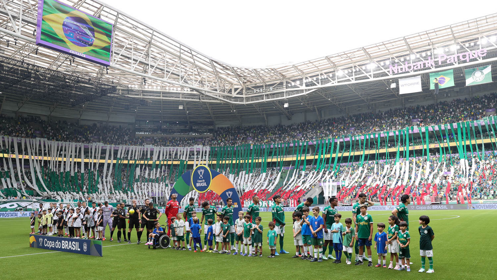

O Palmeiras venceu o Vasco por 1 a 0 neste domingo, 1º de novembro, no Nubank Parque, em São Paulo, pelo jogo de ida da semifinal da Copa do Brasil 2026. O único gol da partida foi marcado por Maurício, ainda no primeiro tempo, em uma jogada construída por Jhon Arias e Marlon Freitas. Diante de 40.570 torcedores, a equipe comandada por Abel Ferreira criou oportunidades para construir uma vantagem maior, mas encontrou dificuldades nas finalizações e terminou com uma vitória mínima.
O resultado colocou o Palmeiras em vantagem na disputa por uma vaga na final. Entretanto, o confronto permaneceu aberto, principalmente pela reação vascaína no segundo tempo e pela incapacidade palmeirense de ampliar o placar, mesmo após a expulsão do zagueiro Alan Saldivia.
Palmeiras começou pressionando e desperdiçou boas oportunidades
O time palmeirense iniciou a partida com uma postura ofensiva, procurando acelerar a circulação da bola e explorar os espaços pelos lados do campo. A movimentação de Jhon Arias, a presença de Flaco López na área e as chegadas de Agustín Giay criaram dificuldades para a defesa vascaína desde os primeiros minutos.
Aos três minutos, Flaco López recebeu pela direita e finalizou de um ângulo difícil, exigindo uma intervenção de Léo Jardim. Pouco depois, aos cinco, o atacante argentino apareceu novamente em condições de marcar, mas não conseguiu aproveitar o cruzamento rasteiro de Giay.
Aos 15 minutos, surgiu outra grande oportunidade. Piquerez avançou pela esquerda e cruzou para a área. Léo Jardim não conseguiu afastar completamente a bola, que sobrou para Giay. O lateral palmeirense finalizou por cima do gol, desperdiçando uma chance clara.
O Vasco encontrava dificuldades para manter a posse de bola no campo ofensivo. A equipe carioca tentava utilizar lançamentos e jogadas de velocidade, mas tinha problemas para superar a marcação do Palmeiras e construir ataques com sequência.
O gol do resultado da pressão inicial
A insistência do Palmeiras foi recompensada aos 23 minutos do primeiro tempo.
Jhon Arias recebeu pelo lado esquerdo e realizou uma jogada individual, superando a marcação vascaína. Na continuidade do lance, Marlon Freitas aproveitou a sobra e encontrou Maurício infiltrando nas costas da defesa.
O meia dominou com a perna direita e finalizou de esquerda, vencendo Léo Jardim e colocando o Palmeiras em vantagem.
A jogada reuniu três elementos importantes da atuação palmeirense: a capacidade de Arias para desequilibrar individualmente, a visão de jogo de Marlon Freitas e a movimentação de Maurício para atacar o espaço entre os defensores.
Mesmo depois de abrir o placar, o Palmeiras continuou chegando com perigo.
Aos 40 minutos, Léo Jardim saiu do gol em uma disputa com Flaco López. Na sequência, Giay cruzou e Arias cabeceou em direção à meta, mas Paulo Henrique apareceu praticamente sobre a linha para evitar o segundo gol.
O Vasco respondeu aos 42 minutos, quando Lescano recebeu na entrada da área e finalizou com perigo, à esquerda de Carlos Miguel.
O primeiro tempo terminou com vantagem palmeirense de 1 a 0, mas com a sensação de que o time paulista havia produzido oportunidades suficientes para construir um resultado mais confortável.
Vasco reagiu no segundo tempo e reclamou de pênalti
A segunda etapa apresentou um cenário diferente. O time carioca voltou mais agressivo, adiantou a marcação e conseguiu levar perigo à defesa adversária.
Logo no primeiro minuto, Adson passou pela marcação de Alexander Barboza e finalizou de esquerda, assustando Carlos Miguel.
Na sequência, Lucas Evangelista realizou um recuo perigoso, obrigando o goleiro palmeirense a afastar a bola perto da linha do gol.
Aos quatro minutos, aconteceu um dos lances mais discutidos da partida. Após uma jogada de Lescano dentro da área, a bola atingiu a mão de Alexander Barboza. Os jogadores vascaínos pediram pênalti, mas o árbitro Anderson Daronco não marcou a infração, e o jogo continuou.
O episódio provocou reclamações do Vasco, que enxergava naquele momento uma oportunidade de empatar o confronto.
A equipe comandada por Pedro Emanuel continuou procurando espaços e teve uma oportunidade especialmente importante aos 13 minutos. Cuiabano recebeu livre pela esquerda, entrou na área e ficou diante de Carlos Miguel, mas finalizou mal, mandando a bola para fora.
O Palmeiras também criou oportunidades durante esse período. Gustavo Gómez apareceu em uma cabeçada perigosa, enquanto Piquerez e Flaco López participaram de jogadas que poderiam ampliar a vantagem alviverde.
Expulsão mudou o cenário da partida
Aos 32 minutos do segundo tempo, o Vasco sofreu um golpe importante.
Alan Saldivia perdeu o controle da bola no meio-campo, e Vitor Roque, que havia entrado no lugar de Maurício, conseguiu recuperar a posse. Na tentativa de interromper a jogada, o zagueiro vascaíno cometeu falta no atacante palmeirense.
Como já havia recebido cartão amarelo no primeiro tempo, Saldivia foi advertido novamente e acabou expulso.
A decisão da arbitragem aumentou a tensão da partida e deixou o Vasco com dez jogadores nos minutos finais.
Com superioridade numérica, Abel Ferreira viu a sua equipe aumentar a presença ofensiva. Andreas Pereira, que havia substituído Lucas Evangelista, passou a participar das construções pelo meio, enquanto Vitor Roque oferecia movimentação e presença dentro da área.
Aos 36 minutos, Andreas finalizou em uma jogada de pressão do Palmeiras, mas a defesa vascaína conseguiu impedir o gol.
Mais tarde, aos 42, Erick recebeu em boas condições e finalizou, obrigando Léo Jardim a realizar outra defesa.
Mesmo com maior volume de jogo, o Palmeiras não conseguiu transformar a vantagem numérica em um segundo gol. O Vasco resistiu à pressão e manteve o placar em 1 a 0 até o apito final.
Veja os melhores momentos da partida abaixo:
Os números mostram o domínio alviverde
As estatísticas ajudam a explicar o comportamento das equipes durante os 90 minutos.
O Palmeiras terminou a partida com 62% de posse de bola, contra 38% do Vasco. O time paulista também levou vantagem nas finalizações, com 19 tentativas, enquanto os visitantes finalizaram seis vezes.
Nas conclusões em direção ao gol, o Palmeiras registrou quatro, contra apenas uma do Vasco. A equipe de Abel Ferreira ainda cobrou dez escanteios, enquanto o clube carioca teve três.
O domínio territorial foi evidente, mas a eficiência ofensiva não acompanhou o volume produzido. O Palmeiras conseguiu transformar apenas uma de suas 19 finalizações em gol, deixando o Vasco com possibilidades reais de reverter a situação na segunda partida.
Para o time carioca, o principal aspecto positivo foi conseguir manter a diferença mínima apesar das dificuldades defensivas e da expulsão na reta final.
Destaques individuais da partida
Maurício foi o protagonista do resultado. O meio-campista justificou sua presença na equipe titular ao marcar o gol decisivo e aparecer no momento certo para aproveitar o passe de Marlon Freitas.
Marlon Freitas também teve participação fundamental. Além da assistência para o gol, ajudou o Palmeiras a controlar a circulação de bola e organizar o jogo pelo setor central.
Jhon Arias foi outro nome importante, sobretudo no primeiro tempo. Sua capacidade de enfrentar marcadores e produzir jogadas pelos lados trouxe dificuldades constantes ao sistema defensivo vascaíno.
Pelo Vasco, Paulo Henrique teve participação decisiva ao evitar um gol praticamente sobre a linha, enquanto Léo Jardim realizou intervenções importantes para manter o placar apertado.
Cuiabano também apareceu entre os protagonistas do segundo tempo. Embora tenha desperdiçado uma oportunidade clara, foi responsável por uma finalização perigosa que exigiu boa defesa de Carlos Miguel.
O que o resultado representou para a semifinal
O Palmeiras saiu do primeiro confronto com uma vantagem importante, mas sem uma classificação encaminhada.
A vitória por 1 a 0 significou que o Verdão poderá disputar a partida de volta precisando apenas de um empate para chegar à decisão. Para o Vasco, uma vitória por dois ou mais gols de diferença garantiria a classificação direta, enquanto um triunfo por apenas um gol levaria a definição aos pênaltis.
A situação também reforçou a importância da história dos dois clubes na competição. O Palmeiras, dono de quatro conquistas até então, busca ampliar sua trajetória vencedora, construída em diferentes gerações e detalhada no histórico dos títulos na Copa do Brasil.
Do outro lado, o Vasco tentava escrever mais um capítulo relevante no mata-mata nacional, tendo como referência a campanha do título de 2011, uma das conquistas mais importantes de sua história.
O jogo da volta
A segunda partida da semifinal ficou marcada para 8 de novembro de 2026, às 17h, em São Januário, no Rio de Janeiro.
Com o mando de campo, o Vasco tem a oportunidade de tentar reverter a desvantagem diante de sua torcida. O Palmeiras, por sua vez, entra em campo com a possibilidade de administrar o resultado.
O regulamento da Copa do Brasil não prevê vantagem pelo gol marcado fora de casa. Portanto, qualquer igualdade no placar agregado após os dois confrontos levaria a decisão da vaga para os pênaltis.
Palmeiras vence mas a semifinal está aberta
O Palmeiras fez o suficiente para vencer o primeiro jogo, mas não conseguiu transformar sua superioridade em uma vantagem mais expressiva. A equipe de Abel Ferreira produziu as principais oportunidades da partida, dominou boa parte das ações ofensivas e encontrou em Maurício o jogador responsável pelo gol decisivo.
O Vasco, por outro lado, passou por dificuldades durante o primeiro tempo, reagiu depois do intervalo e conseguiu evitar uma derrota maior mesmo jogando os minutos finais com um atleta a menos.
A vitória palmeirense por 1 a 0 acabou deixando duas leituras importantes. Para o Verdão, ficou o resultado positivo e a vantagem de jogar pelo empate. Para o Cruzmaltino, permaneceu a possibilidade de buscar a classificação em casa.
Foi um confronto marcado pelo domínio ofensivo do Palmeiras, pela resistência do Vasco, por decisões importantes da arbitragem e, principalmente, pela diferença entre criar oportunidades e transformá-las em gols. Uma vitória que colocou o time paulista mais perto da final, mas que deixou a definição da semifinal para São Januário.